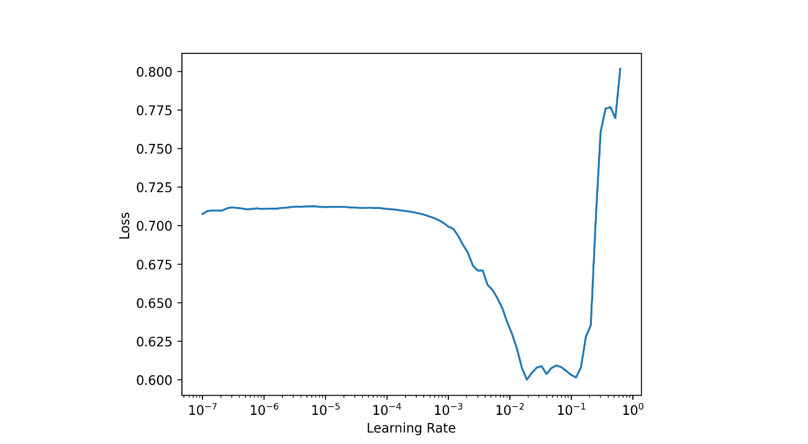
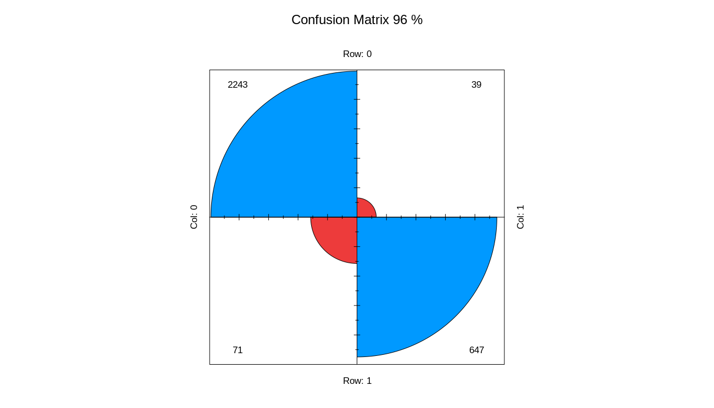

The fastai library simplifies training fast and accurate neural nets using modern best practices. See the fastai website to get started. The library is based on research into deep learning best practices undertaken at fast.ai, and includes “out of the box” support for vision, text, tabular, and collab (collaborative filtering) models.
Tabular data can be downloaded from Kaggle. It is a basic binary classification case which contains both categorical and coninuous columns. Below one can see the structure of the dataset.
library(magrittr)
library(fastai)
df = data.table::fread('datasets_236694_503227_HR_comma_sep.csv')
str(df)> str(df)
Classes ‘data.table’ and 'data.frame': 14999 obs. of 10 variables:
$ satisfaction_level : num 0.38 0.8 0.11 0.72 0.37 0.41 0.1 0.92 0.89 0.42 ...
$ last_evaluation : num 0.53 0.86 0.88 0.87 0.52 0.5 0.77 0.85 1 0.53 ...
$ number_project : int 2 5 7 5 2 2 6 5 5 2 ...
$ average_montly_hours : int 157 262 272 223 159 153 247 259 224 142 ...
$ time_spend_company : int 3 6 4 5 3 3 4 5 5 3 ...
$ Work_accident : int 0 0 0 0 0 0 0 0 0 0 ...
$ left : int 1 1 1 1 1 1 1 1 1 1 ...
$ promotion_last_5years: int 0 0 0 0 0 0 0 0 0 0 ...
$ sales : chr "sales" "sales" "sales" "sales" ...
$ salary : chr "low" "medium" "medium" "low" ...
- attr(*, ".internal.selfref")=<externalptr> Output column is left which is integer. Output has to be converted to character/factor.
df[['left']] = as.factor(df[['left']])Later, we need to divide column names into 2 groups:
dep_var = 'left'
cat_names = c('sales', 'salary')
cont_names = c("satisfaction_level", "last_evaluation", "number_project",
"average_montly_hours", "time_spend_company",
"Work_accident", "promotion_last_5years")Alternatively, it is easier to differentiate 2 types of columns (integer/numeric vs. character/factor) with dplyr::select_if(is.character).
Next step is to split data into 2 parts. However, we need to randomly select indices not rows because the latter will be done by tabular_learner.
The dataset can contain missing/large values. Therefore, fill missing and normalize functions from fastai can quickly handle these situations.
procs = list(FillMissing(),Categorify(),Normalize())In addition, filling missing values can be done in different ways:
Define data loaders and specify batch_size, cat_names, cont_names and etc:
dls = TabularDataTable(df, procs, cat_names, cont_names,
y_names = dep_var, splits = list(tr_idx, ts_idx) ) %>%
dataloaders(bs = 50)A deep learning model which contains embedding layers for categorical columns and linear for continuous ones. At the same time, define metrics:
model = dls %>% tabular_learner(layers=c(200,100,100,200),
config = tabular_config(embed_p = 0.3, use_bn = FALSE),
metrics = list(accuracy, RocAucBinary(),
Precision(), Recall(),
F1Score()))> model
TabularModel(
(embeds): ModuleList(
(0): Embedding(11, 6)
(1): Embedding(4, 3)
)
(emb_drop): Dropout(p=0.3, inplace=False)
(bn_cont): BatchNorm1d(7, eps=1e-05, momentum=0.1, affine=True, track_running_stats=True)
(layers): Sequential(
(0): LinBnDrop(
(0): Linear(in_features=16, out_features=200, bias=True)
(1): ReLU(inplace=True)
)
(1): LinBnDrop(
(0): Linear(in_features=200, out_features=100, bias=True)
(1): ReLU(inplace=True)
)
(2): LinBnDrop(
(0): Linear(in_features=100, out_features=100, bias=True)
(1): ReLU(inplace=True)
)
(3): LinBnDrop(
(0): Linear(in_features=100, out_features=200, bias=True)
(1): ReLU(inplace=True)
)
(4): LinBnDrop(
(0): Linear(in_features=200, out_features=2, bias=True)
)
)
)Before fitting model find optimal learning rate:
lrs = model %>% lr_find()
# SuggestedLRs(lr_min=0.002754228748381138, lr_steep=1.5848931980144698e-06)
model %>% plot_lr_find()
And finally, fit the model:
res = model %>% fit(5, lr = 0.005)epoch train_loss valid_loss accuracy roc_auc_score precision_score recall_score
0 0.173383 0.189803 0.950333 0.969118 0.900000 0.893793
1 0.151623 0.132094 0.960000 0.980776 0.924264 0.908966
2 0.154831 0.118114 0.963333 0.984218 0.939914 0.906207
3 0.149708 0.127625 0.958667 0.982307 0.916782 0.911724
4 0.132304 0.103252 0.967667 0.986488 0.964497 0.899310 Plot confusion matrix:
model %>% get_confusion_matrix() %>%
fourfoldplot(conf.level = 0, color = c("#ed3b3b", "#0099ff"),
margin = 1,main = paste("Confusion Matrix",
round(sum(diag(.))/sum(.)*100,0),"%",sep = ' '))
Let’s make predictions:
model %>% predict(df[1000:1010,]) 0 1 class
1 0.004488660 0.99551141 1
2 0.819206953 0.18079305 0
3 0.051526461 0.94847351 1
4 0.003814965 0.99618500 1
5 0.007526034 0.99247390 1
6 0.093833014 0.90616697 1
7 0.910625637 0.08937429 0
8 0.005479155 0.99452078 1
9 0.025799874 0.97420007 1
10 0.103506751 0.89649332 1
11 0.068529680 0.93147027 1